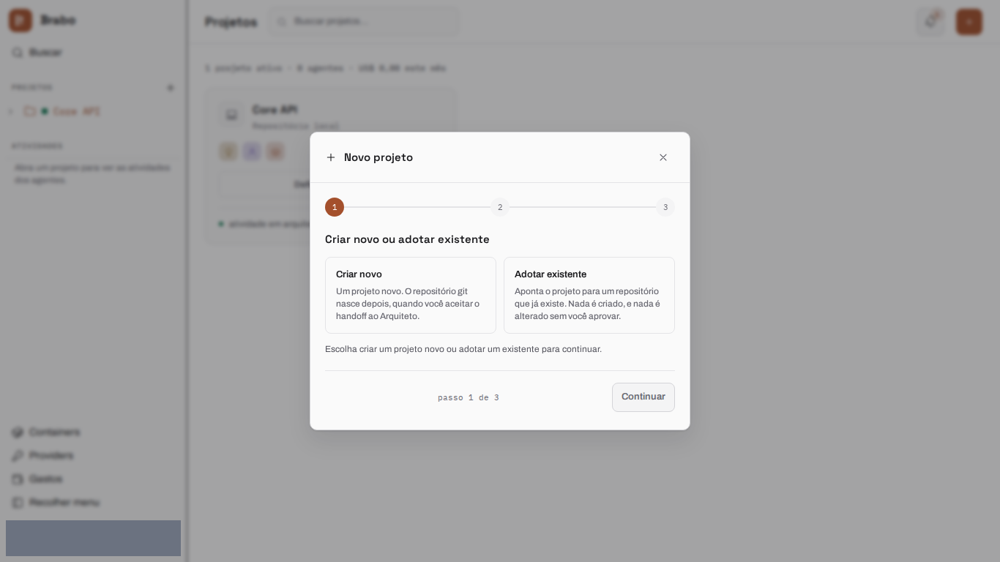
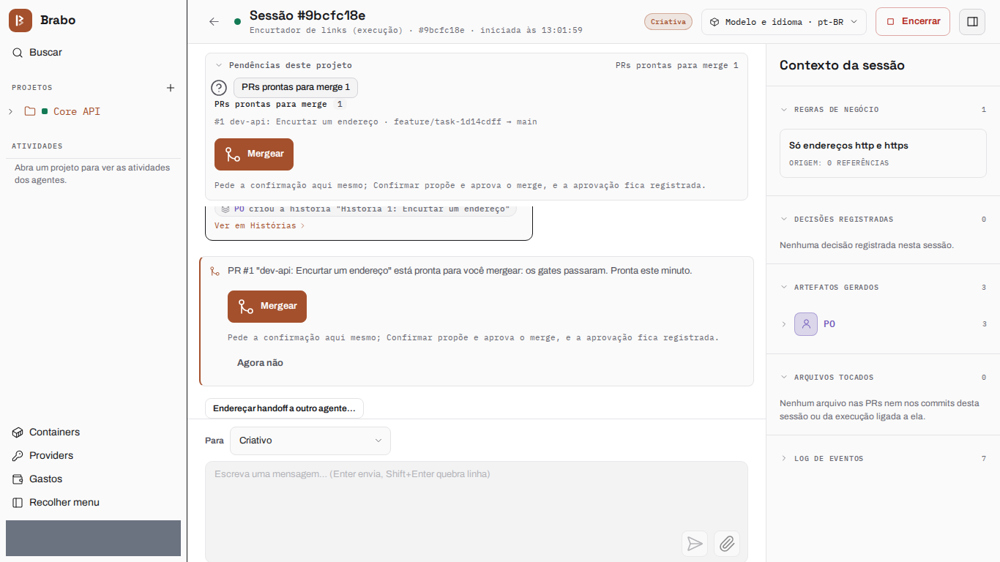

С нуля до готового результата
Эта страница проводит проект от начала до конца, от пустого workspace до работающего результата: сокращатель ссылок (Node 22 + SQLite), вся команда на одной модели. Экраны шагов 1–6 — снимки текущего интерфейса, которые brabo-qa делает для каждой версии, с скрытыми тестовыми данными.
Запись от 14 октября 2026 г.: описывает Brabo на ту дату
Пример-прогон был записан вживую, и эти числа — из него. Проект viralabs-app-2026-10-14b работал на Claude Haiku 5.5 и обошёлся в US$ 1.07. От идеи до выполнения прошло 13 минут, а до последнего merge — около 57 минут взаимодействия. Получилось 8 из 8 задач, плюс ADR и pull request инфраструктуры, и результат, чей набор тестов проходит 102/102 в чистом клоне. Экраны следующих шагов — текущего интерфейса, а не этой записи.
Всё через чат Criativo
Весь прогон велся из одного места — чата сессии Criativo: открытые вопросы, подтверждение архитектуры и каждый merge решались там, без перезагрузки страницы и без открытия другой вкладки.
Путь в шесть шагов:
- Создать проект и выбрать, где живёт код.
- Дать команде модель одним действием.
- Описать идею и ответить на открытые вопросы агентов.
- Проверить PO, Arquiteto и ADR и подтвердить архитектуру.
- Одобрить план выполнения и включить автоматический режим.
- Смержить из чата каждый pull request, прошедший гейты.
Каждый шаг ниже говорит, что делаете вы и что возвращают агенты. Экраны — текущей версии; числа прогона от 14.10 — в блоке выше.
1. Создать проект
Вы создаёте проект в мастере и выбираете, где живёт код. Здесь это смонтированная папка: мастер предлагает путь внутри базы проектов установки, а сама папка должна существовать только к моменту, когда Infra поднимает контейнер. Пока ничего не провиженится — репозиторий рождается позже, когда подключается Arquiteto.

2. Дать команде модель
В Настройках вы применяете одну модель ко всем агентам одним действием. В этом прогоне Claude Haiku 5.5 была применена ко всей команде.

3. Идея и вопросы, которые задают агенты
Вы описываете продукт в чате Criativo. За первый ход Criativo записывает 7 бизнес-правил и 1 решение, а то, что не смог решить сам, превращает в открытые вопросы, каждый с предложенным ответом и правилами, которые он затрагивает («при удалении ссылки удаляется ли и история её кликов?»). Вопросы находятся в очереди «Открытые вопросы» вверху чата: вы принимаете предложение или вводите свой ответ, и ответ записывается как решение. Завершающая строка хода говорит, что было записано («Записано за этот ход: 7 бизнес-правил, 1 решение, 2 открытых вопроса»). Когда закончите, «Я готов — потребность подтверждена» передаёт работу PO.

4. PO, Arquiteto и ADR
PO разбивает правила на бэклог — 4 эпика, 8 историй и 8 задач, примерно
за полторы минуты — и тоже задаёт встречные вопросы, когда в правиле не хватает
значения («какова минимальная длина пароля?»). Когда каждое правило покрыто
историей, хэндофф к Arquiteto принимается автоматически. Arquiteto
предлагает ADR как pull request (arquiteto[bot], PR #1, «Single module with
SQLite on a persistent volume») и, когда архитектура определена, просит вас её
подтвердить: «Подтвердить готовность архитектуры» — это то, что подключает
Infra.

5. Infra, план и автоматический режим
Infra Lead сам поднимает контейнер проекта и открывает pull request
инфраструктуры (infra[bot], PR #2). Dev Lead читает бэклог и карту
модулей и предлагает план выполнения; одобрение плана и запускает выполнение.
Экран предлагает автоматический режим для всей команды в один клик и
говорит, чего он не разрешает: merge в защищённую ветку остаётся за вами. С
этого момента dev agent работает внутри контейнера (/work), и в чате можно
прочитать каждую выполненную им команду и её вывод.

6. Merge из чата
Каждая задача выполняется в dev agent (в среднем 90 с от взятия задачи до pull request, от 36 с до 144 с) и проходит конвейер Dev → QA → SecOps → Вы. Pull request, прошедший гейты, попадает в очередь «PR, готовые к merge» вверху чата Criativo: Merge предлагает merge, а Одобрить в том же блоке его подтверждает. В этом прогоне последние семь pull request (с #4 по #10) были смержены примерно за две минуты, без перезагрузки страницы.

Результат
Запись от 14 октября 2026 г.: описывает Brabo на ту дату
Так закончился прогон, записанный 14.10.
Ветка dev репозитория проекта, склонированная начисто и запущенная в
node:22 с npm test, прошла 102/102 теста. docker compose up поднял API
на порту 8080, и каждое правило было проверено по HTTP: неверный логин и запрос
без токена получают 401; URL ftp или длиннее 2048 символов получает 400
INVALID_URL; короткий код состоит из 7 символов; публичный редирект — это 302,
который записывает клик; неизвестный код получает 404 LINK_NOT_FOUND, а
истёкшая ссылка — 410 LINK_EXPIRED, не засчитывая клик; удаление ссылки
возвращает 204 и удаляет её клики; панель показывает счётчик и историю кликов;
npm run user:create отклоняет пароль короче 12 символов; а /docs отдаёт
справочник API. CORS preflight с 127.0.0.1:8080 и с localhost:8080 получает
каждый свой Access-Control-Allow-Origin, а чужой origin не получает ни
одного.
Следующий шаг
- Оркестрация продукта из нескольких репозиториев путь для разделения продукта так, как был разделён Brabo.